Small strain plasticity¶
Work in progress. Not available for the moment ...
A framework for the approximation of plasticity models in GetFEM++.
Theoretical background¶
We present a short introduction to small strain plasticity. We refer mainly to [SI-HU1998] and [SO-PE-OW2008] for a more detailed presentation.
Additive decomposition of the small strain tensor¶
Let  be the reference configuration of a deformable body and
be the reference configuration of a deformable body and  be the displacement. Small strain plasticity is based on the additive decomposition of the small deformation tensor
be the displacement. Small strain plasticity is based on the additive decomposition of the small deformation tensor  in
in

where  is the elastic part of the deformation and
is the elastic part of the deformation and  the plastic one.
the plastic one.
Internal variables, free energy potential and elastic law¶
We consider

a vector field of  strain type internal variables (
strain type internal variables ( if no internal variables are considered). We consider also a free energy potential
if no internal variables are considered). We consider also a free energy potential

such that the stress type variables are determined by

where  is the Cauchy stress tensor and
is the Cauchy stress tensor and  the stress type internal variables. The plastic dissipation being given by
the stress type internal variables. The plastic dissipation being given by

In the standard cases,  is decomposed into
is decomposed into

In the case of linearized elasticity, one has  for 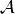 the fourth order elasticity tensor en more precisely
for 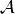 the fourth order elasticity tensor en more precisely  for isotropic linearized elasticity for 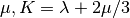 the shear and bulk modulus, respectively.
for isotropic linearized elasticity for 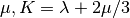 the shear and bulk modulus, respectively.
Plastic potential, yield function and plastic flow rule¶
The plastic deformation is supposed to occurs when the stress attains a critical value. This is determinated by a yield function  and the condition
and the condition

The surface  being the yield surface where the plastic deformation may occur.
being the yield surface where the plastic deformation may occur.
Let us consider also the plastic potential  , (convex with respect to both its two variables) which determine the plastic flow direction in the sense that the flow rule reads as
, (convex with respect to both its two variables) which determine the plastic flow direction in the sense that the flow rule reads as
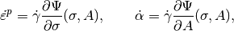
with the additional complementary condition
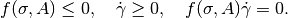
The variable is called the plastic multiplier. Note that when are not differentiable, subdifferentials have to be used. Associated plasticity corresponds to the choice  .
.
Initial boundary value problem¶
The weak formulation of a dynamic elastoplastic problem can be written as follows for an arbitrary cinematically admissible test function  :
:
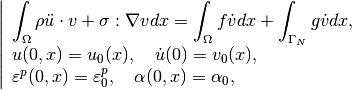
for the initial values and  the force prescribed on the part of the boundary
the force prescribed on the part of the boundary  .
.
Note that plasticity models are often applied on quasitistic problem which corresponds to neglect the term  .
.
Given a time step  we will denote in the sequel 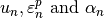 the approximation at time of 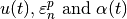 respectively. This approximation is given by a chose time integration scheme (for instance one of the proposed schemes in The model tools for the integration of transient problems) which can be different than the time integration scheme used for the integration of the flow rule (see below).
we will denote in the sequel 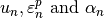 the approximation at time of 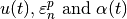 respectively. This approximation is given by a chose time integration scheme (for instance one of the proposed schemes in The model tools for the integration of transient problems) which can be different than the time integration scheme used for the integration of the flow rule (see below).
Flow rule integration¶
The plastic flow rule have to be integrated with its own time integration scheme. Among standards schemes, backward Euler scheme,  -scheme and generalized mid-point scheme are the most commonly used in that context. We make here the choice of the generalized mid-point scheme.
-scheme and generalized mid-point scheme are the most commonly used in that context. We make here the choice of the generalized mid-point scheme.
Let  be the displacement at the considered time step and
be the displacement at the considered time step and  at the previous one. For a quantity we denote the convex combination of the quantity at iterations
at the previous one. For a quantity we denote the convex combination of the quantity at iterations  and 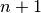.
and 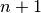.
The mid-point scheme for the integration of the plastic flow rules reads as
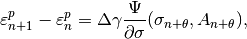
with the complementary condition
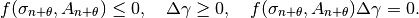
where  is the parameter of the mid-point scheme. We exclude
is the parameter of the mid-point scheme. We exclude  because we will not consider explicit integration of plasticity. Let us recall that
because we will not consider explicit integration of plasticity. Let us recall that  corresponds to the backward Euler scheme and
corresponds to the backward Euler scheme and  to the mid-point scheme which is a second order consistent scheme.
to the mid-point scheme which is a second order consistent scheme.
A solution would be to solve the whole problem with all the unknows, that is . This is of course possible but would be a rather expensive strategy because of the resulting high number of degrees of freedom. A classical strategy (the return mapping one for instance, see [SO-PE-OW2008] or the closes point projection one) consist in integrating locally the plastic flow on each Gauss point of the considered integration method separately, or more precisely to consider on each Gauss point the maps
which results from the local flow rule integration (the pair is the solution to equations (1), (2) and (3)). Both these maps and their tangent moduli (usually called consistent tangent moduli) are then used in the global solve of the problem with a Newton method and for the unique remaining variable. The advantage of the return mapping strategy is that the unique variable of the global solve is the displacement . A nonlinear solve on each Gauss point is often necessary which is usualy performed with a local Newton method.
In GetFEM++ we propose both the return mapping trategy and also an alternative strategy developped below which is mainly inspired from [PO-NI2016], [SE-PO-WO2015] and [HA-WO2009] and allow more simple tangent moduli. It consists in keeping (a multiple of) as an additional unknown with respect to . As we will see, this will allow a more generic treatment of the yield functions, the price for the simplicity being this additional unknown scalar field.
First, we consider an additional (and optional) given function 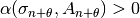 whose interest will appear later on (it will allow simple local inverses) and the new unknown scalar field
so that our two main unknows are now 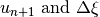. The plastic flow rule integration may now read:
(1)
(2)
(3)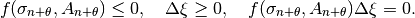
For be given, we define the two maps
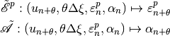
where the pair is the solution to equations (1), (2) (without the consideration of (3)). We will see later, that, at least for simple isotropic plastic flow rules, these maps have a simple expression, even sometimes a linear one with respect to  .
.
Still be given the stress  reads
reads


The complementarity equation (3) is then prescribed with the use of a well chosen complementarity function, as in [HA-WO2009] for  such as:
such as:
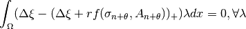
or
pb : need of
Plane strain approximation¶
A plane strain approximation is a 2D problem which corresponds to the deformation of a long cylindrical object where the strain in the length direction (assumed to be along the  axis) is considered small compared to the ones in the other directions and is neglected. It result in a plane strain tensor of the form
axis) is considered small compared to the ones in the other directions and is neglected. It result in a plane strain tensor of the form

We denote

the non neglected components of the strain tensor. In the decomposition of plastic and elastic part of the strain tensor, we assume

and

The adaptation to the plane strain approximation to plastic model is most of the time an easy task. An isotropic linearized elastic response reads

and thus

The nonzero  component of the stress tensor is given by
component of the stress tensor is given by

Note that in the common case where isochoric plastic strain is assumed, one has

Plane stress approximation¶
The plane stress approximation describe generally the 2D membrane deformation of a thin plate. It consist in prescribing the stress tensor to have only in-plane nonzero components, i.e.

We will still denote

the in-plane components of the stress tensor. For elastoplasticity, it consists generally to apply the 2D plastic flow rule, prescribing the out-plane components of the stress tensor to be zero with the additionnal variables  ,
,  ,
,  being unknown (see for instance [SO-PE-OW2008]).
being unknown (see for instance [SO-PE-OW2008]).
For an isotropic linearized elastic response, one has  such that
such that

with

so that
(4)
Moreover

Note that in the case where isochoric plastic strain is assumed, one still has
Some classical laws¶
Tresca :  where
where  spectral radius of the Cauchy stress tensor and
spectral radius of the Cauchy stress tensor and  the uniaxial yield stress (which may depend on some hardening internal variables.
the uniaxial yield stress (which may depend on some hardening internal variables.
Von Mises :  where
where
 the deviatoric part of and
the deviatoric part of and  .
.
Perfect isotropic associated elastoplasticity with Von-Mises criterion (Prandl-Reuss model)¶
There is no internal variables and we consider an isotropic elastic response. The flow rule reads
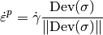
This corresponds to  .
.
The generalized mid-point scheme for the integration of the plastic flow rule reads:
Choosing the factor and still with this gives the equation
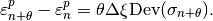
Since this directly gives:
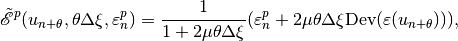
which is a linear expression with respect to (but not with respect to  ).
).
Closest point projection approach (elimination of the multiplier)
The flow rule can be written in term of differential inclusion
where is the set of admissible stres tensors, is the indicator function of this set and its sub-differential (normal cone to  ). This can be equivalently written
). This can be equivalently written
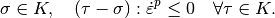
or
where is the fourth order elasticity tensor. Now, in term of projection it can be expressed as
for any and 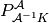 being the orthogonal projection on 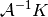 with respect to the scalar product induced by .
The generalize mid-point scheme reads

With the choice this gives
Since can be expressed as
We finally find with 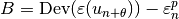
Plane strain approximation
The plane strain approximation has the same expression replacing the 3D strain tensors by the in-plane ones  and 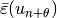.
and 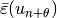.
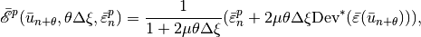
where is still the 3D deviator.
Moreover, for the yield condition,
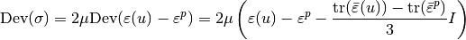
Plane stress approximation
For plane stress approximation, we use (4) which gives
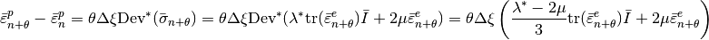
thus with 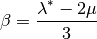 one has
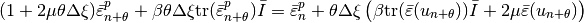
By inverting this relation we find for
Isotropic elastoplasticity with linear isotropic and kinematic hardening and Von-Mises criterion¶
We consider an isotropic elastic reponse and the internal variable  being the accumulated plastic strain which satisfies
being the accumulated plastic strain which satisfies

For  the isotropic hardening modulus, the linear hardening consists in
the isotropic hardening modulus, the linear hardening consists in
i.e. 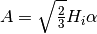 and a uniaxial yield stress defined by
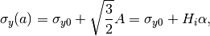
for  the initial uniaxial yield stress. The yield function (and plastic potential since this is an associated plastic model) can be defined by
the initial uniaxial yield stress. The yield function (and plastic potential since this is an associated plastic model) can be defined by
where  is the kinematic hardening modulus. The same computation as in the previous section leads to
is the kinematic hardening modulus. The same computation as in the previous section leads to
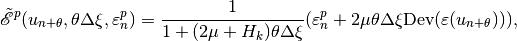
![\begin{array}{rcl} \tilde{\mathscr A}(u_{n+\theta}, \theta \Delta \xi, \varepsilon^p_{n}, \alpha_n) &=& \alpha_n + \sqrt{\Frac{2}{3}}\theta \Delta \xi\|\mbox{Dev}(\sigma_{n+\theta} - H_k\varepsilon^p_{n+\theta})\| = \alpha_n + \sqrt{\Frac{2}{3}}\theta \Delta \xi\|2\mu\mbox{Dev}(\varepsilon(u_{n+\theta})) - (2\mu+H_k)\varepsilon^p_{n+\theta}\| \\ &=& \alpha_n + \sqrt{\Frac{2}{3}}\Frac{\theta \Delta \xi}{1+(2\mu+H_k)\theta\Delta \xi}\|2\mu\mbox{Dev}(\varepsilon(u_{n+\theta})) - (2\mu+H_k)\varepsilon^p_{n}\| \\ &=& \alpha_n + \sqrt{\Frac{2}{3}}\|\varepsilon^p_{n+\theta}- \varepsilon^p_{n}\|.\end{array}](../_images/math/4df5c041b952a0042205cbab07e25b18a4141d52.png)
Note that the isotropic hardening modulus do not intervene in 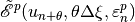 but only in .
Closest point projection approach
Using the same approach as for the perfect isotropic plasticity, the flow rule can be written
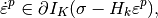
where 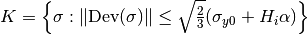. Writting
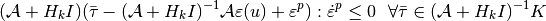
we conclude applying the generalized mid-point scheme by
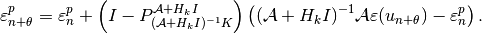
Now, since
and and with 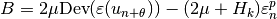 one has
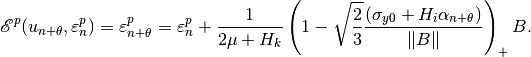
The problem is not completely solved since is still undetermined. However
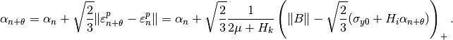
Thus
which complete the expression.
Plane strain approximation
The plane strain approximation has the same expression replacing the 3D strain tensors by the in-plane ones and .
Souza-Auricchio elastoplasticity law (for shape memory alloys)¶
See for instance [GR-ST2015] for the justification of the construction of this flow rule. A Von-Mises stress criterion together with an isotropic elastic response, no internal variables and a special type of kinematic hardening is considered with a constraint  . The plastic potential and yield function have the form
. The plastic potential and yield function have the form

with the complementarity condition

where 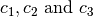 are some physical parameters. Note that  has to be understood to be the whole unit ball for
has to be understood to be the whole unit ball for  .
.
The integration of the flow rule reads
(5)
which can be transformed in
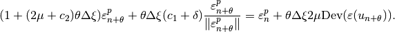
With
we conclude that 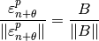 and then 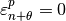 for 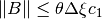 and
Since for 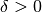 (complementarity condition), we can deduce the following expression for :
The yield condition reads then
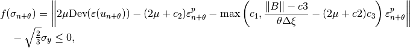
Plane strain approximation
The plane strain approximation has the same expression replacing the 3D strain tensors by the in-plane ones and .
Some classical modelizations¶
Elasto-plasticity bricks¶
Other bricks¶
to be done:
getfem::add_elastoplasticity_brick
(md, mim, ACP, varname, datalambda, datamu, datathreshold, datasigma, region);
A specific brick based on the low-level generic assembly for perfect plasticity¶
This is an previous version of a elastoplasticity brick which is restricted to isotropic perfect plasticity and is based on the low-level generic assembly. Its specificity which could be interesting for testing is that the flow rule is integrated on finite element nodes (not on Gauss points).
The function adding this brick to a model is:
getfem::add_elastoplasticity_brick
(md, mim, ACP, varname, previous_varname, datalambda, datamu, datathreshold, datasigma, region);
- where:
- varname represents the main displacement unknown on which the brick is added (u).
- previous_varname is the displacement at the previous time step.
- datalambda and datamu are the data corresponding to the Lame coefficients.
- datathreshold represents the plastic threshold of the studied material.
- datasigma represents the stress constraint values supported by the material. It should be composed of 2 iterates for the time scheme needed for the Newton algorithm used. Note that the finite element method on which datasigma is defined should be able to represent the derivative of varname.
- ACP corresponds to the type of projection to be used. It has an abstract_constraints_projection type and for the moment, only exists the VM_projection corresponding to the Von Mises one.
Be careful: datalambda, datamu and datathreshold could be constants or described on the same finite element method.
This function assembles the tangent matrix and the right hand side vector which will be solved using a Newton algorithm.
Other useful functions¶
The function:
getfem::elastoplasticity_next_iter
(md, mim, varname, previous_varname, ACP, datalambda, datamu, datathreshold, datasigma);
computes the new stress constraint values supported by the material after a load or an unload (once a solve has been done earlier) and upload the variables varname and datasigma as follows:

Then,  and
and  contains the new values computed and one can restart the process.
contains the new values computed and one can restart the process.
The function:
getfem::compute_elastoplasticity_Von_Mises_or_Tresca
(md, datasigma, mf_vm, VM, tresca=false);
computes the Von Mises (or Tresca if tresca = true) criterion on the stress tensor stored in datasigma . The stress is evaluated on the mesh_fem mf_vm and stored into the vector VM. Of course, this function can be used if and only if the previous function elastoplasticity_next_iter has been called earlier.
The function:
getfem::compute_plastic_part
(md, mim, mf_pl, varname, previous_varname, ACP, datalambda, datamu, datathreshold, datasigma, Plast);
computes on mf_pl the plastic part of the material, that could appear after a load and an unload, into the vector Plast.
Note that datasigma should be the vector containing the new stress constraint values, i.e. after a load or an unload of the material.

Table Of Contents
- Small strain plasticity
Previous topic
Finite strain Elasticity bricks
Next topic
ALE Support for object having a large rigid body motion
Download
Main documentations
- GetFEM++ User documentation
- Python Interface
- Matlab Interface
- Scilab Interface
- Gmm++
- GetFEM++ project